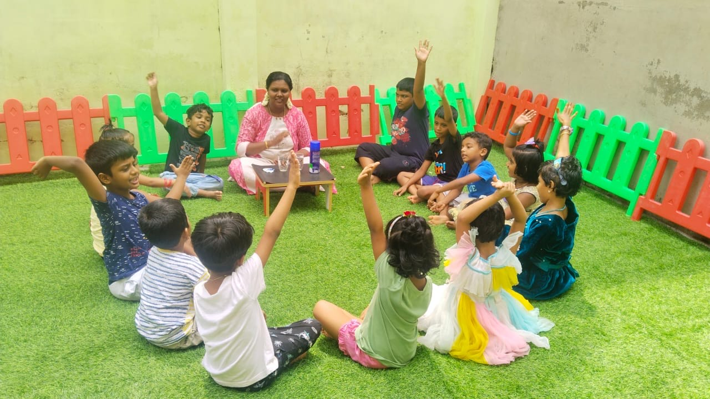

Where passion meets education
A leading institution shaping the next generation of educators through specialised, internationally recognised Montessori training — since 2019.
Jolly Kids Montessori Training Institute
Welcome to Jolly Kids Montessori Training Institute, where passion meets education. Committed to excellence, we are a leading institution dedicated to shaping the next generation of educators through specialised Montessori training.
We believe in the transformative power of education, particularly in the crucial formative years of childhood. Our comprehensive Montessori training programs are crafted to instil a deep understanding of Montessori principles, child psychology, and effective teaching methodologies.
Join us on this exciting adventure, where creativity, curiosity, and commitment come together to shape the future of education. Your journey to becoming an inspiring educator starts here.


Education with a difference
Education is the natural process carried out by the child and is not acquired by listening to words but by experiences in the environment.
Montessori teaching is a non-traditional method that combines education techniques with a thorough understanding of child development. Montessori teachers foster independent growth in their students, acting more like guides than traditional teachers.
Tested worldwide for over 100 years, it is a revolutionary way of observing and supporting children's natural development — building creativity, problem solving, critical thinking, time management, care for the environment and compassion.
We impart high-quality education and training to young women and men, enabling them to transform themselves into truly child-centred Montessori teachers.
What makes us different
AMI & IMTC Trained Educators
Classes handled by experienced, internationally certified Montessori educators.
Hands-on Learning
Learn with 350+ real Montessori materials, not just theory.
Job Placements
Placement support in reputed schools across India and abroad.
Start Your Own School
We guide you to set up and run your own Montessori school.
Central Govt. Certificate
Recognised certification valid for work in India & overseas.
Global Community
Alumni teaching across 10+ countries, from UAE to New Zealand.
Dr. Joshla L. Soni
Founder & Directress
I'm the Founder and Directress of Jolly Kids Montessori Training Institute and Jolly Kids Montessori School, Nagercoil. I completed my Masters in Computer Science Engineering. After my daughter was born in 2013, I didn't want to give her screen time, so I started searching for alternatives — and found the Montessori method. I brought it into our home and saw wonderful results: my daughter grew independent, caring, loving and bold, with good social skills.
In 2019, I started Jolly Kids Montessori School and Jolly Kids Montessori Training Institute in Nagercoil, so every child in and around Nagercoil could benefit from this scientifically proven, 100+ year-old method.
In 2020, when COVID locked down the world, I took Montessori education to the next level — training parents to bring Montessori into their homes with simple steps. My online Montessori homeschooling program was a hit with parents across the globe: they attended the classes and taught their own children using the Montessori kits we sent them. Some of those parents went on to train with me as Montessori teachers.
In 2021, the school returned to the classroom while the training institute continued both online and offline. Trainees from Nagercoil, Kanyakumari, Chennai, Dindigul, Coimbatore, the UAE, Singapore, New Zealand, Dubai, Oman and Qatar have completed our courses — and are now teaching in schools or running schools of their own.
With more than twelve years of experience working with children, I have trained Montessori teachers across Tamil Nadu, the UAE, Singapore, New Zealand, Dubai, Oman and Qatar.
Our Vision
To make every child benefit from the scientifically proven Montessori method — by training passionate, world-class educators who nurture independence, creativity and compassion in young minds everywhere.
Our Mission
To deliver high-quality, hands-on Montessori teacher training with international standards, government certification and genuine placement support — empowering women and men to build meaningful, lasting careers in early education.
Featured in Kungumam Thozhi
Our founder's journey — and how Montessori education builds children's thinking skills — featured in Kungumam Thozhi, Chennai (1–15 May 2024).
“குழந்தைகளின் சிந்திக்கும் திறனை மேம்படுத்தும் ‘மான்டசரி’ கல்வி!”
Tap a page to read it in full.
Ready to begin your teaching journey?
Talk to our team, explore the right course for you, and take the first step towards a rewarding Montessori career.